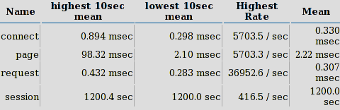

Инструменти за стрес-тестове на уеб приложения
Изготвено от:
Мариан Грауров
фак.номер: 61567, 2 курс, гр. 3, Софтуерно инженерство
Курс: Уеб технологии
Разработено: 2014 година
Преподавател: Милен Петров
Повече за автораОбща информация за стрес тестването
Стрес тестването е тип тестване на производителността (performance), фокусирано към това да се определи здравината (robustness), наличността (availability) и надеждността (reliability) на нашето уеб приложение при екстремни условия, които представляват тежка натовареност, висока паралелност или ограничени изчислителни ресурси. Целта на стрес тестването е да се определят проблеми в приложението които изникват или стават видими само при такива екстремни условия. Правилното стрес тестване ни помага да намерим бъгове за синхронизация и време, блокиращи проблеми, проблеми с приоритетите и бъгове за загуба на ресурси. Идеята е да се стресира системата до точка на чупене, за да се намерят бъгове, които ще направят тази точка потенциално вредна. Не се очаква от системата да обработи претоварването без адекватни ресурси, а да се държи по някакъв приемлив начин (например да се провали без да повреди или загуби данни).
Стрес тестването обикновено включва симулирането на един или повече важни за продукта сценария при разнообразие от стресиращи условия. Например може да качим уеб приложението си на сървър на който вече има приложение използващо много от ресурсите на процесора. Тогава нашето приложение веднага е лишено от нужните му изчислителни ресурси и трябва да се бори с другите приложения за процесорни цикли. Също така може да се тества и само една уеб страница или дори само един артикул като някаква процедура или клас. Информацията тук представлява инструкции на високо ниво за стрес тестване на уеб приложения. Това може да помогне за откриване на проблеми, които възникват само при екстремни ситуации.
НачалоПримери за стрес условия
Примерите за стрес условия включват:
- Огромен обем от гледна точка или на потребителите или на информацията; примерите могат да включват отказ от услуга (denial of service), атаки или ситуация, където към много популярни новини, например страница за тях, са отправени много заявки за преглед в период от три минути.
- Ограничение на ресурсите, породено например от отказване на дисковото устройство или мястото на което са записани те.
- Неочаквано зацикляне.
- Неочаквано завиване по време на възстановяването.
Примери за симптоми, свързани със Стрес
Симптомите свързани със Стрес включват:
- Данните са загубени или повредени.
- Използването на ресурсите остава неприемливо след като стреса е премахнат.
- Компонентите на приложението отказват при отговор.
- Необработени изключения се представят на потребителя.
Как да използваме информацията дадена тук
Използвайте информацията дадена тук за да разберете основните похвати на стрес тестването и стъпките които се прилагат при стрес тестването на уеб приложение. За да схванете възможно най-добре нещата:
- Използвайте секциите “Input” и “Output”, за да разберете ключовите входове и изходи при този вид тестване.
- Използвайте секцията “Подход към Стрес-тестване”, за да разберете с какъв подход да тествате уеб приложение, и като бърза справка за вас и вашия екип
- Използвайте секцията “Различни стъпки”, за да разберете подробностите на всяка стъпка при стрес тестването на уеб приложение.
- Използвайте секцията “Сценарии за Стрес-тестване”, за да разберете различни реални сценарии, при които се прилага стрес тестване.
Input
За да приложите стрес-тестване, по-добре използвайте като справка едно от следните неща:
- Резултати от предишни стрес-тестове
- Характеристики за използване на приложение (сценарии)
- Работа при тези сценарии при екстремни условия
- Характеристики при профилно натоварване
- Текущ пиков капацитет на натоварване
- Архитектура и информация за хардуер и мрежа
- Оценка на риска при бедствия
Output
Резултатите от стрес-тестовете може да включват:
- Мерки на приложението при стресиращи условия
- Симптоми на приложението при стрес
- Информация, която екипът може да използва, за да определи здравината, наличността и надеждността
Подход към Стрес тестване
Следните стъпки са свързани със стрес-тестването на уеб приложение:
- Стъпка 1 – Определяне на целите на стрес-тестването.
- Стъпка 2 – Определяне на ключов/и сценарий/сценарии.
- Стъпка 3 – Определяне на натоварване.
- Стъпка 4 – Определяне на показателите.
- Стъпка 5 – Създаване на случаи за тестване.
- Стъпка 6 – Симулиране на натоварване.
- Стъпка 7 – Анализиране на резултатите.
Определяне на целите на стрес-тестването спрямо желания резултат от процеса.
Определяне на сценарии или случаи за приложението, за които да се направи стрес-тестване, за да се открие потенциален проблем.
Определяне на натовареността, която тестващия иска да приложи при сценариите, определени в предната стъпка. Основава се на натовареността и пиковият капацитет на натоварване.
Определят се показателите, които искаме да съберем от работата на приложението. После се разглеждат спрямо резултатите и потенциалните проблеми определени в стъпката за определяне на целите на стрес тестването.
Създават се тестови случаи в които се определят стъпките за провеждане на един тест, както и очакваните резултати.
Използват се инструменти за тестване, които да симулират нужната натовареност за всеки тестови случай и да вземе резултатите за показателите.
Анализират се показателите взети по време на тестването.
Тези стъпки са графично изобразени отдолу. Следващата секция обяснява всяка от тези стъпки подробно.
Стъпка 1 - Определяне на целите на стрес-тестването.
Питайки себе си и други хора следните въпроси може да помогне за определянето на исканите резултати от стрес-тестването:
- Определянето на начините по които приложението може да се срине катастрофално цел на теста ли е?
- А осигуряването на информация за екипа който работи по него, за да се изградят защити срещу това сриване?
- Целта да се види как приложението се държи, когато системните ресурси, като памет, дисково пространство, скорост на интернета или честотата на процесора, са ограничени ли е?
- 4. Имаме ли за цел да осигурим това функционалността да не се развали при стрес?
Например, може да има случаи където показателите на изпълнението на операциите да отговарят на изискванията, но функционалността на приложението не им отговаря – поръчките не се запазват в базата данни, приложението не връща пълна информация за продукта при търсене, формите не са попълнени правилно, препратки към страници за грешки се получават по време на стрес тестването и така нататък.
Стъпка 2 - Определяне на ключов/и сценарий/сценарии.
За да се получат най-важните резултати от един стрес-тест, той трябва да се фокусира върху сценария или сценариите за употреба които са най важни за цялостния успех на приложението. За да се определят тези сценарии, се започва с определянето първоначално на един сценарий при който искаме да приложим стрес-тестването, с цел да определим потенциалните проблеми при изпълнението на приложението. Вземете в предвид следните неща при избор на сценарий:
- Избирайте сценарии основани на това колко важни са за цялостното изпълнение на приложението.
- Опитайте се да тествате онези операции, които е най-вероятно да влияят на производителността. Те може да включват операции, които правят интензивно заключване и синхронизация, дълги
- Базирайте своя избор на сценарий на специфични части на вашето приложение определени като трафик места от данните за тестване на натоварването. Въпреки че би трябвало да сте настроили фино и да сте премахнали тези места след теста за натоварване, по-добре направете стрес-тест на системата в тези части, за да определите колко добре се справят промените ви при високи нива на стрес.
Примери за сценарии които да се тестват отделно от други сценарии за употреба за типично приложение за електронна търговия включват следното:
- Сценарий за ъпдейтване на инвентара при обработка на поръчка за определен продукт. Тази функционалност има потенциала да покаже заключващи проблеми и проблеми със синхронизацията.
- Сценарий за показване на резултат, базиран на потребителска заявка. Ако потребителят подаде често заявка с широк обхват, може да има проблем при ползването на паметта. Например използването на паметта може да се засегне от заявка при връщане на цяла таблица от данни.
Стъпка 3 – Определяне на натоварване.
Натоварването, което прилагате при определен сценарий би трябвало да стресира системата отвъд праговите граници за да ви позволи да наблюдавате последиците от условията на стрес. Един от методите да се определи това натоварване, при което приложението започва да показва признаци на стрес е постепенно да се увеличава натоварването и да се наблюдава поведението на приложението при различните степени на натоварване. Целта е систематично да се тества при различни натоварвания докато не се стигне до крашване или значима грешка. Тези вариации на натовареност могат да се постигнат чрез добавяне на още потребители, намаление на времето за забавяне, добавяне или намаляне на броя и типа на представените дейности на потребителите или настройване на информацията за тестване.
Например, стрес-теста може да бъде измислен така че да симулира логване на всеки регистриран потребител да се опитва да се логне в системата за период от 30 секунди. Това ще симулира ситуация при която приложението става налично отново след период на изключване и всички потребители са рефрешвали своя уеб браузър, чакайки приложението да стане достъпно. Въпреки че тази ситуация не се появява често в реалния свят, става достатъчно често за да има смисъл от това да разберем как приложението ще работи ако се случи.
Не забравяйте да представите натоварването чрез точни и реалистични данни – тип и обем, логване на различни потребители, ID-та на продукти, категории на продукти и така нататък – което ни позволява да симулираме важни проблеми като безизходици или употреба на ресурси.
Следните дейности са полезни за определянето на точно натоварване за стрес тестване:
- Определяне на разпределението на работата.
- Определете пиковото натоварване от потребители.
- Определете anti-profile.
За всеки ключов сценарий, определете разпределението на работата което ще се симулира. Разпределението се основава на броя и типа на потребители, които ще изпълняват сценария по време на стрес тестване.
Определете максимума на потребителите които се очакват да използват системата при условия за пиково натоварване на системата. Използвайки разпределението на работата за всеки сценарий, изчислете процента потребители за всеки ключов сценарий.
Като алтернатива може да започнете като приложите анти-профил към нормалното натоварване. При анти-профила процентите на разпределението на работа са обърнати спрямо сценария на прилагане. Например ако нормалното натоварване за сценарий на процес на поръчка е 10 процента от целия капацитет то при анти-профила ще бъде 90 процента. Останалото натоварване може да бъде разпределено сред другите сценарии. Използването на анти-профил може да послужи като важна начална точка за нашето стрес тестване, защото то осигурява това че критичните сценарии се прилагат при товар отвъд нормалните условия на натоварване.
Стъпка 4 – Определяне на показателите.
Когато се определят правилно, показателите осигуряват информация за това колко добре или зле работи нашето приложение спрямо нашите изисквания за производителност. В допълнение показателите могат да помогнат за откриване на проблемни области и затруднения при приложението.
Използвайки исканите характеристики за производителност определени при стъпката „Определяне на целите на стрес-тестването.“ се определят показатели които да се вземат, които се фокусират на потенциални клопки при всеки сценарий. Показателите могат да се отнасят както към производителността така и към исканите цели, както и да осигуряват информация за потенциални проблеми.
Използвайки исканите характеристики за производителност определени при стъпката „Определяне на целите на стрес-тестването.“ се определят показатели които да се вземат, които се фокусират на потенциални клопки при всеки сценарий. Показателите могат да се отнасят както към производителността така и към исканите цели, както и да осигуряват информация за потенциални проблеми.
| Показатели за производителност | Категория |
|---|---|
| Базов набор от показатели | |
| Процесор |
|
| Процес |
|
| Памет |
|
| Диск |
|
| Мрежа |
|
| Транзакция/бизнес показател |
|
| Нишка |
|
| Време за отговор |
|
Стъпка 5 – Създаване на случаи за тестване.
Определянето на натоварването и ключовите сценарии не винаги осигурява цялата информация нужна ни за да имплементираме и създадем тестовите случаи. Допълнителни входни данни за цялостно създаване на стрес-тест включват цели за производителност, характеристики за натовареност, тестова информация, тестова среда и определени показатели. Всеки дизайн за тест би трябвало да съдържа очакваните резултати и/или ключовата информация, която да се вземе от него, по такъв начин че всеки сценарий на тест да може да се отбележи като успешен, неуспешен или неопределен след тестване.
Следното е пример на сценарий за тестване базиран на сценарий за даване на поръчка.
Тест 1 – Сценарий за даване на поръчка
- Натовареност: 1000 потребителя по едно и също време.
- Време за изпълнение(Think time): Използва се произволно време между 1 и 10 секунди в тестовия скрипт след всяка операция.
- Продължителност на теста: Направи теста за два дни.
Очаквани резултати:
- Процеса на хостване при приложенията не би трябвало да рециклира ресурси заради затруднения или изхабяване на памет.
- Пропусквателността не трябва да пада под 35 заявки за секунда.
- Времето за отговор не трябва да е повече от 7 секунди да 95 процента от всички завършени транзакции.
- Грешките от тип „Зает сървър“ не трябва да са повече от 10 процента от всички отговори.
- Транзакциите за покупки не бива да се провалят по време на изпълнение на тестовете. Входните данни на базата данни трябва да отговарят по бройка на „Успелите транзакции“.
Стъпка 6 – Симулиране на натоварване.
След като сте направили предишните стъпки до приемливо ниво, трябва да сте готови да симулирате натоварването което се поражда от стрес тестването. Типично, изпълнението на теста включва следните стъпки:
- Убедете се/Валидирайте че средата за тестване отговаря на конфигурациите, които сте очаквали и/или за които сте проектирали своя тест.
- Гарантирайте, че и теста и средата за тестване са правилно конфигурирани според показателите.
- Преди да проведете теста изпълнете бърз “smoke test” за да сте сигурни че тестовия скрипт и отдалечените системи за следене на производителността работят правилно.
- Рестартирайте системата (Освен ако сценарият казва да се направи обратното) и започнете официалното тестване на приложението.
Бележка: Убедете се, че клиентският компютър който използвате за да генерирате натоварването не е стресиран. Използването на ресурси като процесор и памет трябва да останат достатъчно ниски за да се подсигури че генератора на товар не е затруднен.
НачалоСтъпка 7 – Анализиране на резултатите.
Анализирайте данните получени от тестването и ги сравнете с допустимото ниво на показателите. Ако резултатите определят че вашите изисквания за производителност не са покрити, анализирайте и оправете причината за проблема. За да се адресират прегледаните проблеми, може да има нужда да се направи едно от следните неща:
- Направете преглед на дизайна.
- Направете преглед на кода.
- Направете стрес-тестове в среди където е възможно да се дебъгват възможните причини за грешките по време на изпълнение на теста.
В ситуации, където се наблюдават проблеми с производителността, но само при условия които се считат за малко вероятни да гарантират промяна в момента, може да решите да направите допълнителни тестове за да откриете ранни индикатори за проблем и да предотвратите нежелани изненади.
НачалоСценарии за Стрес-Тестване
Следните са примери за това как се използва стрес-тестването на практика:
- Стрес тестване на приложение.
- Стрес тестване на транзакции.
- Системно стрес тестване.
Този тип тест обикновено се фокусира върху повече от една транзакция на системата под стрес, без да има изолация на компоненти. При стрес-тестването на приложения, е много вероятно да откриете дефекти свързани със заключването и блокирането на данни, претоварване на мрежата и затруднение на производителността при различни компоненти или методи във приложението. Понеже обхвата на приложението е едно единствено приложение, е често да се използва този тип стрес-тестване след опит за натоварване на здравината на приложението чрез тестване или като последна тестова фаза за планиране на капацитет. Също така е често да се откриват дефекти свързани с състояния на процеси и изтичане на основна памет от споделен код или компонент.
Стрес-тестването на транзакции се цели към работата на транзакционно ниво с обем на натоварване който излиза извън нормите на този на очакваните операции на продуктивност. Тези тестове се фокусират на валидирането на поведението при условия на стрес, като високо натоварване с едни и същи ограничения на ресурсите, при тестване на цялото приложение. Тъй като тестът изолира индивидуална транзакция или група от транзакции той позволява много специфично разбиране на капацитета на пропусквателност и на други характеристики за индивидуални компоненти без добавената сложност за комуникацията между вътрешните компоненти, която се появява при тестване на ниво приложение. Тези тестове са полезни за премяна, оптимизиране и откриване на условия за грешки на специфичното ниво на компоненти.
При този тип тестване стресови или условия за екстремно натоварване са генерирани при много приложения, работещи на една и съща система и по този начин да се преминат границите на очакваните за приложението възможности на още по-високо ниво. Целта на системното стрес-тестване е да се открият дефекти в ситуации където различни приложения се блокират взаимно и се борят за системни ресурси като памет, процесор, пространство на диска и мрежа. Този тип тестване е познат още като интеграционно стрес-тестване или консолидирано стрес тестване. При големи системни стрес-тестове се стресират всички приложения едновременни в една и съща консолидирана среда. Някои организации предпочитат да проведат този вид тестване в големи лаборатории, понякога с помощта на разработчиците на хардуера и софтуера.
Проучвателно стрес-тестване
Проучвателното стрес-тестване е подход за подчиняване на система. Приложение или компонент на набор от необичайни параметри или условия които са малко вероятни да се появят в реалния свят но все пак са възможни. Като цяло проучвателното тестване може да бъде разглеждано като единен процес на учене, дизайн на тестването и изпълняване на тестването. Най-често този вид стрес-тестове се проектират чрез промяна на вече съществуващи тестове и/или работа с администратори на приложението/системата за да се създадат малко вероятни но възможни условия в системата. Този тип стрес тестване се провежда рядко в изолация защото обикновено се прави с цел да се определи дали повече системни стрес-тестове са нужни за свързан с определена грешка режим. Следните са няколко примера за проучвателно стрес тестване за да се определи отговора на въпроса „Как ще реагира системата ако…?“
- Всички потребители се логват по едно и също време.
- Разпределителя на работа (load balancer) изведнъж се чупи.
- Всички сървъри започват сканиране за вируси по едно и също време докато са в пиков момент на натовареност.
- Базата данни се изключи по време на пикова употреба на системата.
Някои инструменти за стрес-тестване:
- Apache JMeter™
- Способност на тества натоварването и производителността на много различни типове сървъри/протоколи:
- Web - HTTP, HTTPS
- SOAP
- FTP
- База данни през JDBC
- LDAP
- Message-oriented middleware (MOM) през JMS
- Mail - SMTP(S), POP3(S) and IMAP(S)
- MongoDB (NoSQL)
- Native commands or shell scripts
- TCP
- Пълна портативност и 100% чиста Java.
- GUI дизайна позволява по бързо планиране на тестови план и дебъгване.
- Кеширане и офлайн анализиране/инициализиране на тест резултатите.
- Високо разширяемо ядро.
- Selenium
- Selenium IDE: ад-он за Firefox за записване и пускане не тестове.
- Selenium Remote Control: Система клиент/сървър за управление на уеб браузъри локално или други компютри, използвайки почти всеки програмен език и тестващ framework.
- Selenium Grid: като selenium Remote Control, но прави тестове на много сървъри по едно и също време.
- Selenium Core: Тестваща система базирана на Javascript.
- Tsung 
- HTTP
- WebDAV
- SOAP
- PostgreSQL, MySQL
- Jabber/XMPP Сървъри
- LDAP
Selenium има различни проекти, които могат да се комбинират и да се създаде среда за тестване на здравина.
Tsung може да се използва за стрес-тестване на почти всякакви сървъри включително:
Заключение
Стрес тестването ни позволява да определим потенциални грешки или проблеми на приложението които се появяват само при екстремни условия. Такива условия варират от изтощение на системните ресурси като памет, процесор, мрежа и капацитет на диска до огромно натоварване в следствие на непредвидими начини на употреба, присъщи за уеб приложенията. Стрес-тестването се центрира около цели и ключови сценарии със наблягане върху здравината, надеждността и стабилността на приложението. Ефективността на стрес-тестването зависи от прилагането на правилната методология и способността правилно да се анализират резултатите от тестването. Прилагането на правилната методология зависи от капацитета за възпроизвеждане на условия за натовареност както за потребителската работа така и за обема на информацията, възпроизвеждането на ключови сценарии и интерпретирането на ключовите показатели за производителност.
Начало